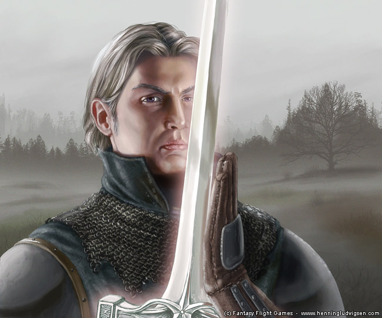
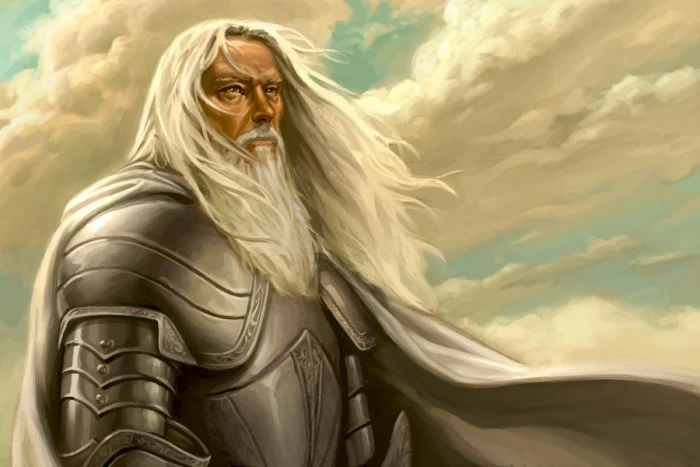
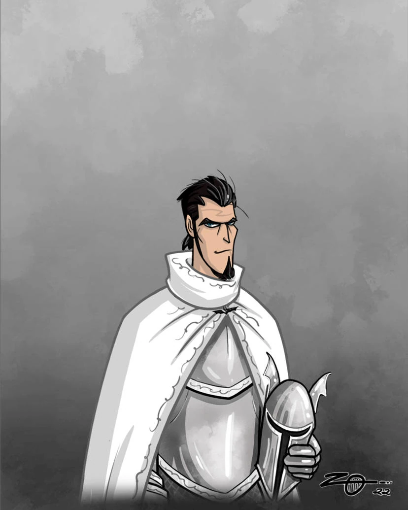
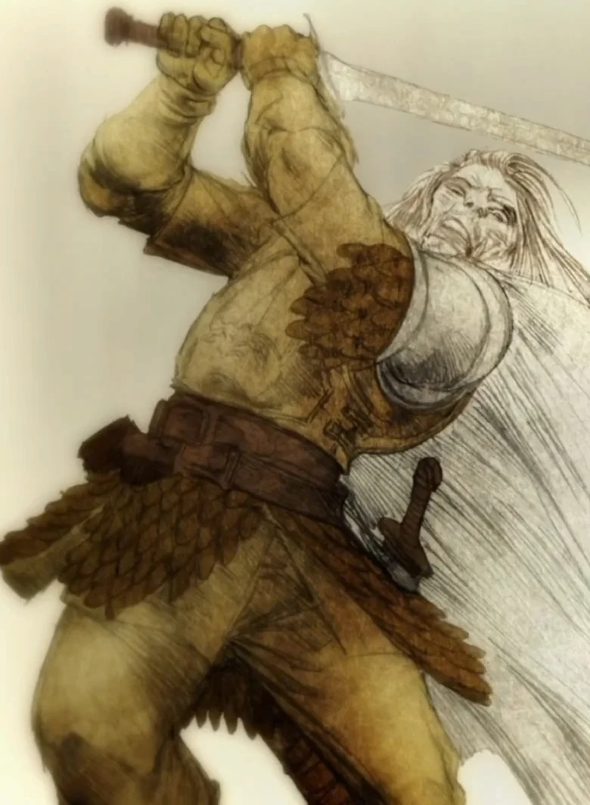
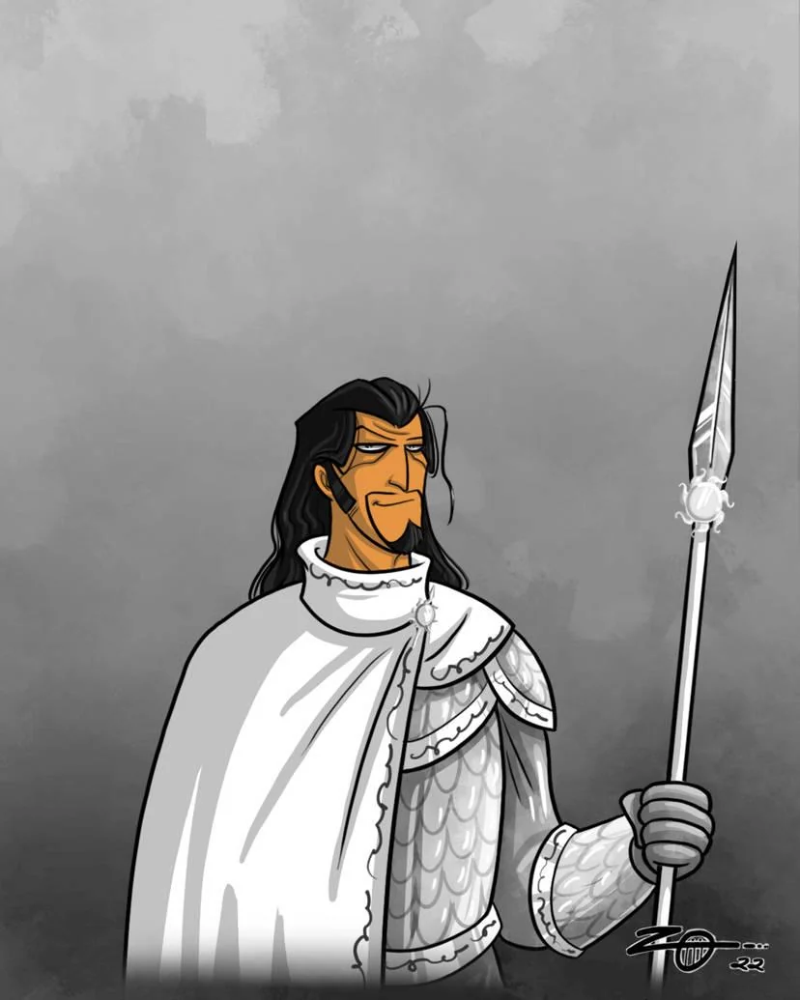
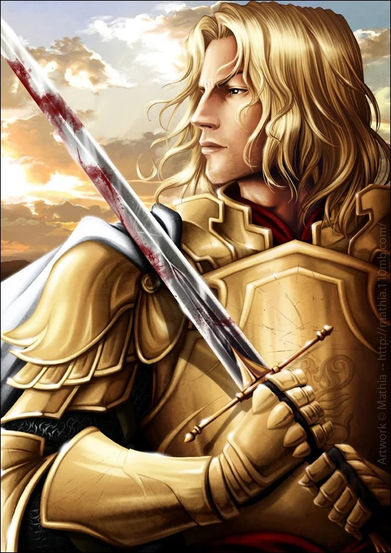

Ser Gerold Hightower
The White Bull
Background
Ser Gerold Hightower, known as the White Bull, was the Lord Commander of the Kingsguard. A man of immense physical strength and strict adherence to duty, he took over command of the white cloaks after the tragic death of Ser Duncan the Tall at Summerhall.
Notable Feats
uring the War of the Ninepenny Kings, Gerold took command of the royal forces after the Hand of the King was slain in battle. Later, during the campaign against the Kingswood Brotherhood, he was famously shot through the hand by the Smiling Knight, which led to Ser Arthur Dayne taking over the pursuit of the outlaws.
His Fate
Like Arthur Dayne, Lord Commander Hightower remained at the Tower of Joy in Dorne on the orders of Prince Rhaegar. He refused Lord Eddard Stark's offer of peace, reminding him that the Kingsguard do not flee. He was slain in the ensuing 7-on-3 skirmish.

Ser Arthur Dayne
The Sword of the Morning
Background
Ser Arthur Dayne was the deadliest and most renowned member of King Aerys II's Kingsguard. As a true knight of House Dayne of Starfall, he earned the prestigious title "Sword of the Morning" after proving himself worthy to wield their ancestral greatsword, Dawn, which was forged from the heart of a fallen star. He was beloved by the smallfolk and was Prince Rhaegar Targaryen's closest, and most trusted friend.
Notable Feats
Arthur's skill with a blade was unrivaled in Westeros and was considered the greatest swordsman to ever live. His most famous exploit was his campaign against the notorious Kingswood Brotherhood. During the final clash, Arthur engaged in a legendary single combat against the Smiling Knight, a madman who was considered the deadliest outlaw of the band. As they fought, the Smiling Knight's sword became heavily notched and ruined by the strikes from Dawn. In a true display of chivalry, Arthur paused the duel and allowed the outlaw to fetch a fresh weapon. When the Smiling Knight returned, he pointed at Dawn and said, "It's that white sword of yours I want." Arthur simply replied, "Then you shall have it, ser," before crossing blades once more and slaying him.
His Fate
Ser Arthur remained loyal to his Kingsguard vows until his final breath. During the climax of Robert's Rebellion, he was stationed at the Tower of Joy in the Red Mountains of Dorne to guard Lyanna Stark, alongside Ser Oswell Whent and Lord Commander Gerold Hightower. He died in combat against Lord Eddard Stark and his six northern companions. According to Eddard's own admission, Arthur would have defeated him if not for the last minute intervention of the crannogman, Howland Reed.

Ser Barristan Selmy
Barristan the Bold
Background
Considered one of the greatest knights to ever live, Barristan was knighted at the age of 16 by King Aegon V Targaryen. He is revered throughout the Seven Kingdoms for his unmatched honor, humility, and martial prowess.
Notable Feats
Barristan's list of legendary deeds is vast. He ended the War of the Ninepenny Kings by slaying Maelys the Monstrous in single combat. He rescued King Aerys II single handedly during the Defiance of Duskendale by infiltrating the Dun Fort at night. He also avenged Lord Commander Hightower's wound by defeating Simon Toyne, the leader of the Kingswood Brotherhood.
His Fate
Unlike his brothers, Barristan survived the Rebellion. He fought fiercely at the Battle of the Trident but was severely wounded. Robert Baratheon, respecting his honor, spared him and named him his own Lord Commander. In the current book timeline, he was dismissed by Joffrey Baratheon and crossed the Narrow Sea. He is currently alive in Meereen, serving Queen Daenerys Targaryen.

Ser Oswell Whent
The Black Bat
Background
A knight of House Whent, Ser Oswell was known for his dark sense of humor and his distinctive Kingsguard helm, which was adorned with a black bat with folded wings, the sigil of his house. He was a close confidant of Prince Rhaegar.
Notable Feats
While less is written about his combat exploits compared to Dayne or Selmy, Oswell was heavily involved in the political maneuvering of the realm. He visited his brother, Lord Whent, to help orchestrate the massive Tourney at Harrenhal, which many believe was a secret shadow-council organized by Prince Rhaegar to depose the Mad King.
His Fate
Ser Oswell was the third Kingsguard stationed at the Tower of Joy. When Eddard Stark's forces arrived, Oswell was reportedly sharpening his sword on a whetstone. He died fighting the northern lords alongside Dayne and Hightower.

Ser Jonothor Darry
Ser Jon Darry
Background
Ser Jon Darry was an older, fiercely loyal member of the Kingsguard. House Darry was known as one of the most staunchly Targaryen loyalist houses in the Riverlands. He was the brother of Ser Willem Darry, the man who would eventually smuggle a young Viserys and Daenerys Targaryen to safety in Braavos.
Notable Feats
Specific combat feats for Jon Darry are not detailed in the lore, but his absolute devotion to his vows is his defining trait.
His Fate
er Jon Darry rode out with Prince Rhaegar's royalist forces during Robert's Rebellion. He was killed in the mud of the Ruby Ford during the Battle of the Trident.

Prince Lewyn Martell
Dornish Royalty
Background
Prince Lewyn was a member of the ruling house of Dorne, serving as the uncle to Doran, Elia, and Oberyn Martell.
Notable Feats
During Robert's Rebellion, King Aerys became deeply paranoid and believed the Dornish had betrayed him. He essentially used Princess Elia as a hostage to force Prince Lewyn to take command of ten thousand Dornish spears and march them to the Trident to fight for the crown.
His Fate
At the Battle of the Trident, Lewyn's forces engaged the armies of the Vale. He was mortally wounded during the chaos of the battle. In his weakened state, he engaged in a final duel with Ser Lyn Corbray, who was wielding the Valyrian steel sword Lady Forlorn, and was slain.

Ser Jaime Lannister
he Kingslayer
Background
The golden son of Lord Tywin Lannister. He was appointed to the Kingsguard by Aerys II at the unprecedented age of fifteen. However, this was a calculated political move by the Mad King to rob Tywin of his prized heir and keep him as a hostage in King's Landing.
Notable Feats
A natural prodigy with a blade, Jaime won his first melee at the age of thirteen. He rode against the Kingswood Brotherhood alongside his heroes, where he crossed swords with the Smiling Knight and saved Lord Sumner Crakehall. For his bravery, he was knighted on the battlefield by Ser Arthur Dayne.
His Fate
During the Sack of King's Landing, King Aerys commanded his pyromancers to ignite caches of wildfire hidden beneath the city to burn it to the ground. To save half a million innocent lives, Jaime broke his Kingsguard vows, murdered the pyromancers, and drove his sword into the back of King Aerys, earning the despised moniker of the Kingslayer. In the current book timeline, he is alive but missing in the Riverlands after departing with Brienne of Tarth.